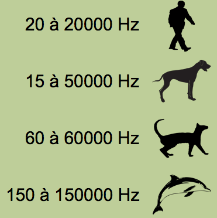

Théorie du son
Propagation du son
La notion d'onde peut être définie comme une perturbation oscillatoire qui se propage à partir d'une source.
C'est Robert Boyle (1627-1691) qui a admis le premier que l'air était un milieu de transmission du son, en observant les diminutions d'intensité d'un son émis dans une atmosphère progressivement raréfiée.
La vitesse de propagation du son dans l'air est de 331 m/s (à une température de 0°C et à une pression de 760 mm de mercure).
| Milieu de propagation | Température | Vitesse du son |
| air | 0°C | 331 m/s |
| air | 15°C | 340 m/s |
| eau | 13°C | 1428 m/s |
| fer | 20°C | 4887 m/s |
| bois de sapin | non spécifié | 6000 m/s |
La vitesse du son augmente avec la température pour atteindre 340 m/s à 20°C dans l'air (c'est généralement la valeur de référence utilisée quand on parle de vitesse du son dans l'air).
Réception du son
Jusqu'à la fin du XIXe siècle, la plupart des recherches en acoustique étaient effectuées en utilisant l'oreille comme récepteur du son. En 1830, Félix Savart donna comme limites de l'audition humaine les valeurs de 8 vibrations par seconde vers le grave et de 24000 vibrations par seconde vers l'aigu. Actuellement on les situe respectivement à 20 Hz et 20000 Hz.

Le seuil d'audibilité en intensité fut étudié par Toepler, Botzmann et J. William Strutt Rayleigh :

En 1843, Georg S. Ohm indiqua que la qualité d'un son musical est due à la superposition de sons purs de différentes fréquences que l'oreille est capable de percevoir. Hermann von Helmholtz le suivit dans cette voie et donna la première théorie du fonctionnement de l'oreille, appelée « théorie de la résonance ».
Les premières considérations concernant l'acoustique des salles intervinrent en 1853 lors de la parution des articles de J. B. Upham définissant les phénomènes de réverbération et de réflexion du son à la surface des parois d'une pièce. En 1856, Joseph Henry se mit à étudier l'acoustique des auditoriums. La fondation de l'acoustique architecturale est attribuée à C. Sabine en 1900.
Parmi les tentatives d'amplification du son, on peut citer l'utilisation des trompes qui sont connues depuis l'antiquité . En 1650, Kircher proposa l'utilisation de trompes paraboliques pour l'aide à l'audition. René Laënnec inventa en 1819 le stéthoscope. Le terme « microphone » fut inventé par Charles Wheastone en 1827 pour désigner un instrument similaire au stéthoscope.
Comme pour la plupart des phénomènes étudiés en physique, les chercheurs en acoustique ont tenté de mettre au point des techniques permettant de donner une représentation visuelle des phénomènes. En 1858, John LeConte observa les variations d'une flamme sous l'influence du son. John Tyndall développa le même principe pour l'observation des sons à hautes fréquences et de leur réflexion, réfraction et diffraction. Le microphone électrique supplanta ce système. Divers dispositifs furent employés pour la visualisation des phénomènes sonores dont le « phonautographe » mis au point par Leon Scott. Cet instrument, précurseur du phonographe, permettait de tracer une courbe décrivant l'onde sonore à l'aide d'un stylet.
La possibilité offerte par l’enregistrement du son a révolutionné les sciences du son avec l’apparition du phonographe d’Edison en 1875. Le son peut ainsi être fixé sur un support, il n’est plus un phénomène acoustique fugitif, il est reproductible à loisir. L’année suivante, c’est Bell qui invente le son électrique avec le téléphone en 1876 qui conduira au traitement du signal sonore et aux transmissions à distance.
L'électronique a apporté de nouveaux instruments de mesure. Pour connaître les partiels présents dans un son, on peut capter ce son à l'aide d'un microphone puis analyser le signal électrique ainsi produit grâce à des filtres électroniques. L'analyseur de spectre est un appareil utilisant un ensemble de filtres. Il permet de visualiser sur un écran la courbe donnant les intensités d'un ensemble de fréquences. Cette courbe est appelée spectre de raies.
Classification des sons
Il existe différentes classifications des sons. Nous nous limiterons à la suivante, on peut classer les sons en deux catégories : les sons élémentaires et les sons complexes.
Sons élémentaires
L'impulsion
L'impulsion est un son de durée infiniment courte (clic ou impulsion ou dirac) comme un clap de cinéma ou un coup de révolver ou, en numérique, la succession 0, 1, 0 ou 0, 1, -1, 0. Certains acousticiens prétendent que ce son contient toutes les fréquences mais nous dirons plus simplement qu'il n'en contient aucune.
Le programme Faust suivant produit une impulsion une fois par seconde (à une période p correspondant au taux d'échantillonnage ma.SR) :
Le mouvement harmonique simple
Le mouvement harmonique simple (aussi appelé "son pur") correspond à une onde sinusoïdale de fréquence fixe. Le son produit par un diapason est proche d'un mouvement harmonique simple.
Le programme Faust suivant produit une sinusoïde à 440 Hz ce qui correspond un à LA3 :
Sons complexes
Les sons complexes correspondent à tous les autres sons. Ce sont donc des sons formés de la juxtaposition de plusieurs vibrations élémentaires (les sons partiels). Nous pouvons distinguer trois catégories: les sons harmoniques, les sons inharmoniques et les bruits.
Les sons harmoniques
Ce sont des sons dont les partiels sont tous multiples d’une même fréquence fondamentale. Ce sont des sons à hauteur déterminée. Ils résultent d’une onde périodique.
Des partiels dont les fréquences sont en rapports harmoniques fournissent un ensemble particulier d'intervalles par rapport à notre perception musicale
Les sons inharmoniques
Ce sont des sons dont les partiels (identifiables à l'analyse) ne sont pas multiples (par ex. les sons de cloches).
Les bruits
Ce sont les sons dont le nombre de partiels est trop important pour qu'on puisse les identifier à l'analyse (ex. une cymbale, une caisse claire avec timbre) ou qui varient trop vite dans le temps.